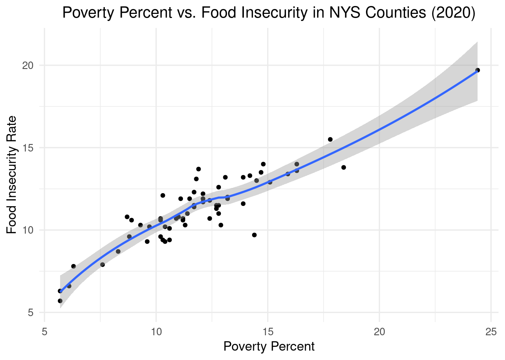

Final Project: Food Insecurity in the United States
By: Candice Kasahara
2022-12-14
Introduction
##Background
Food insecurity impacts at least 10.5% of the United States as of 2019 (Silva 2020). This statistic brings forth the question of how it is distributed across the U.S., who is being affected, and why are they being affected? Going into this study, I will look into the relation between food insecurity rates at a county-level compared to national poverty percents. If there is a visible positive correlation between these variables, this will provide a potential entry-point for urban efforts to decrease food insecurity. However, if there is either no correlation, or a negative correlation, then other variables should be compared to food insecurity instead. With the results, they will hopefully provide the foundation needed to look into current urban food security efforts in local communities.
Problem/Question
What trends do we see from the distribution of food insecurity?
What are the drivers of food insecurity?
Materials and Methods
Food insecurity data - Feeding America:Map the Meal Gap Data
Poverty percent data - SAIPE State and County Estimates for 2020
Poverty line guidelines - 2020 Poverty Guidelines
Packages and Data
library(tigris)
library(ggplot2)
library(plotly)
library(maps)
library(dplyr)
library(viridis)
library(tidycensus)
library(sf)
#food insecurity data
FS20_url<- read.csv("https://raw.githubusercontent.com/geo511-2022/final_project-LeahBargnesi/master/data/Map_the_Meal_Gap_Data%20(1)/MMG2022_2020-2019Data_ToShare.csv")
FS19_url<- read.csv("https://raw.githubusercontent.com/geo511-2022/final_project-LeahBargnesi/master/data/Map_the_Meal_Gap_Data%20(1)/MMG2021_2019Data_ToShare.csv")
FS18_url<- read.csv("https://raw.githubusercontent.com/geo511-2022/final_project-LeahBargnesi/master/data/Map_the_Meal_Gap_Data%20(1)/MMG2020_2018Data_ToShare.csv")
FS17_url<- read.csv("https://raw.githubusercontent.com/geo511-2022/final_project-LeahBargnesi/master/data/Map_the_Meal_Gap_Data%20(1)/MMG2019_2017Data_ToShare.csv")
FS16_url<- read.csv("https://raw.githubusercontent.com/geo511-2022/final_project-LeahBargnesi/master/data/Map_the_Meal_Gap_Data%20(1)/MMG2018_2016Data_ToShare.csv")
FS15_url<- read.csv("https://raw.githubusercontent.com/geo511-2022/final_project-LeahBargnesi/master/data/Map_the_Meal_Gap_Data%20(1)/MMG2017_2015Data_ToShare.csv")
FS14_url<- read.csv("https://raw.githubusercontent.com/geo511-2022/final_project-LeahBargnesi/master/data/Map_the_Meal_Gap_Data%20(1)/MMG2016_2014Data_ToShare.csv")
FS13_url<- read.csv("https://raw.githubusercontent.com/geo511-2022/final_project-LeahBargnesi/master/data/Map_the_Meal_Gap_Data%20(1)/MMG2015_2013Data_ToShare.csv")
FS12_url<- read.csv("https://raw.githubusercontent.com/geo511-2022/final_project-LeahBargnesi/master/data/Map_the_Meal_Gap_Data%20(1)/MMG2014_2012Data_ToShare.csv")
FS11_url<- read.csv("https://raw.githubusercontent.com/geo511-2022/final_project-LeahBargnesi/master/data/Map_the_Meal_Gap_Data%20(1)/MMG2013_2011Data_ToShare.csv")
FS10_url<- read.csv("https://raw.githubusercontent.com/geo511-2022/final_project-LeahBargnesi/master/data/Map_the_Meal_Gap_Data%20(1)/MMG2012_2010Data_ToShare.csv")
FS09_url<- read.csv("https://raw.githubusercontent.com/geo511-2022/final_project-LeahBargnesi/master/data/Map_the_Meal_Gap_Data%20(1)/MMG2011_2009Data_ToShare.csv")U.S. Food Insecurity Map
To understand the degree of necessity for the implementation of urban agriculture and community fridges, we want to look at an overall map of the most recent food insecurity rates within the United States. With the information provided by this data, we want to compare it to poverty rates in the U.S. to determine whether they are significantly correlated. The data is from Feeding America.
Food Insecurity Rate data for 2020
FS20_url<- read.csv("https://raw.githubusercontent.com/geo511-2022/final_project-LeahBargnesi/master/data/Map_the_Meal_Gap_Data%20(1)/MMG2022_2020-2019Data_ToShare.csv")
FS2020_data<- FS20_url%>% rename(Food_Insecurity = X..of.Food.Insecure.Persons.Overall..1.Year., Food_Insecurity_Rate = Overall.Food.Insecurity.Rate..1.Year., County = County..State)
FS2020 <- subset(FS2020_data, select = c(State, County, Food_Insecurity_Rate, Food_Insecurity))U.S. Food Insecurity Choropleth Map 2020
USA <- counties(cb = TRUE)USA_filter = USA %>%
mutate(FIPS = as.integer(GEOID)) %>%
filter(!STATE_NAME %in% c("Alaska", "Hawaii", "Guam", "Commonwealth of the Northern Mariana Islands", "Puerto Rico", "American Samoa", "United States Virgin Islands"))
US_map = left_join(USA_filter,FS2020_data,by = "FIPS") %>%
mutate(Food_Insecurity_Rate2 = as.numeric(sub("%","",Food_Insecurity_Rate,fixed = T)))
my_breaks <- c(0, 10, 20, 30)
ggplot() +
geom_sf(data = US_map, color="transparent", size=0, aes(fill=Food_Insecurity_Rate2)) +
labs(title = "Food Insecurity Rates in the U.S. (by County) in 2020",
caption = "Source: Map the Meal Gap 2022 - Feeding America") +
theme_bw(13) +
theme(plot.caption= element_text(size=7,
color="blue",
vjust = 5)) +
theme(plot.title = element_text(hjust = 0.5)) +
scale_fill_gradientn(colours=rev(magma(6)),
name="Food Insecurity Rate",
na.value = "grey100",
breaks = my_breaks, labels = my_breaks)
Based on the choropleth map above, we see that most counties in the United States are experiencing food insecurity between 10-20%. There are some exceptions below 10%, especially in North Dakota. More noticeably, there are a significant number of counties that are facing food insecurity rates beyond 20%, most noticeably in South Dakota and spread throughout the southern portion of the U.S. As seen in the graph, food insecurity clearly threatens a significant portion of the U.S., which opens up the field of urban agriculture and community fridges to decrease some of the food insecurity being experienced.
U.S. Poverty Line Map
After examining the food insecurity choropleth map above, we wanted to look at what some of the drivers of food insecurity to see which neighborhoods urban agriculture and community fridges should benefit or be implemented within. One driver we predict to correlate with food insecurity is the percent of those below the poverty line. According to the ASPE, the national 2020 poverty guideline was on average 12,760 dollars for one person in a household and 44,120 dollars for up to eight in one household. While the poverty guideline does vary per state, for this study, these averages will represent the entirety of the U.S. The data is from the United States Census, SAIPE State and County Estimates for 2020.
Poverty Percent Data for 2020
US_poverty <- read.csv("poverty.csv", skip = 5) [-1,] %>%
mutate(FIPS = paste0(
sprintf("%02d",State.FIPS.Code),
sprintf("%03d",County.FIPS.Code)),
Poverty_Percent=as.numeric(Poverty.Percent..All.Ages))U.S. Poverty Percent Choropleth Map 2020
USA_filtered = USA %>%
mutate(FIPS = as.character(GEOID)) %>%
filter(!STATE_NAME %in% c("Alaska", "Hawaii", "Guam", "Commonwealth of the Northern Mariana Islands", "Puerto Rico", "American Samoa", "United States Virgin Islands"))
Poverty_map = left_join(USA_filtered,US_poverty,by = "FIPS")
my_breaks <- c(0, 10, 20, 30)
ggplot() +
geom_sf(data = Poverty_map, color="transparent", size=0, aes(fill=Poverty_Percent)) +
labs(title = "Poverty Rates in the U.S. (by County) in 2020",
caption = "Source: U.S. Census Bureau, Small Area Income
and Poverty Estimates (SAIPE) Program") +
theme_bw(13)+
theme(plot.caption= element_text(size=7,
color="blue",
vjust = 5)) +
theme(plot.title = element_text(hjust = 0.5)) +
scale_fill_gradientn(colours=rev(viridis(6)),
name="Poverty Rate",
na.value = "grey100",
breaks = my_breaks, labels = my_breaks)
In this choropleth map, we see a similar trend as the food insecurity choropleth map. Overall, the poverty percent ranges from 5-20%. However, like the food insecurity map, some South Dakota counties appear to face a noticeably higher poverty rate, with over 30%, than other parts of the country. Similarly, the southern section of the U.S. shows between 20-30% poverty rate. Overall, we can see that there is high degree of correlation between poverty rate and percent of food insecurity.
New York Poverty Percent vs. Food Insecurity
Seeing the visual correlation between the food insecurity and poverty percent choropleth maps, we deemed that it was significant enough to examine through a dot plot. We narrowed down our search to New York State since there are currently multiple initiatives that are combating food scarcity. If there is a noticeable correlation between food insecurity and percent poverty, then this information could be used to further push the implementation and funding for these efforts.
Poverty Percent vs Food Insecurity Data
Poverty <- US_poverty %>%
mutate(FIPS = as.integer(FIPS))
Overall_map = left_join(Poverty,FS2020_data, by = "FIPS")
Overall2 <- Overall_map %>%
filter(Postal.Code == "NY", Year == "2020") %>%
mutate(Food_Insecurity_Rate2 = as.numeric(sub("%","",Food_Insecurity_Rate,fixed = T)))
# Separating values needed for graphing
Overall3 <- subset(Overall2, select = c(FIPS, Food_Insecurity_Rate2, Poverty_Percent))Visualizing Poverty Percent and Food Insecurity Correlation
dot_plot <- ggplot(Overall3, aes(x = Poverty_Percent, y = Food_Insecurity_Rate2)) +
geom_point() +
geom_smooth() +
labs(title = "Poverty Percent vs. Food Insecurity in NYS Counties (2020)", x = "Poverty Percent", y = "Food Insecurity Rate") +
theme_minimal(13) +
theme(plot.title = element_text(hjust = 0.5))
dot_plot
In this dot plot, we see a clear correlation between poverty percent and food insecurity. As the poverty percent increases, food insecurity increases linearly as well.
Conclusion
It is clear that efforts to reduce food insecurity could aid those who do not surpass the poverty line in New York State. Further, the graphics shown support the necessity for the implementation of urban agriculture and community fridges to decrease food insecurity, which could in turn decrease poverty rates. However, in the future, research in other drivers of food insecurity would prove useful for finding better methods of decreasing the national percent.
References
Gundersen, C., Strayer, M., Dewey, A., Hake, M., & Engelhard, E. (2022). Map the Meal Gap 2022: An Analysis of County and Congressional District Food Insecurity and County Food Cost in the United States in 2020. Feeding America.
Hess, D., & Winner, L. 2007. Enhancing Justice and Sustainability at the Local Level: Affordable Policies for Urban Governments*. Local Environment, 12(4), 379–395. https://doi.org/10.1080/13549830701412489
Overall (all ages) Hunger & Poverty in the United States | Map the Meal Gap. 2022. Retrieved October 11, 2022, from https://map.feedingamerica.org
Silva, C. 2020, September 27. Food Insecurity In The U.S. By The Numbers. NPR. https://www.npr.org/2020/09/27/912486921/food-insecurity-in-the-u-s-by-the-numbers
Story Map Series. 2022 . https://suny-buffalo.maps.arcgis.com/apps/MapSeries/index.html?appid=7a3b2029ff374ac282a90573776ebffe.
2020 Poverty and Median Household Income Estimates - Counties, States, and National Source: U.S. Census Bureau, Small Area Income and Poverty Estimates (SAIPE) Program